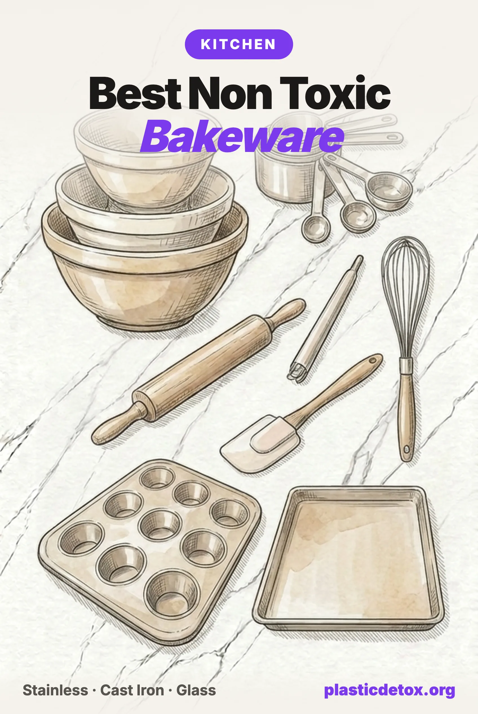

Best Non Toxic Bakeware: Plastic Free Baking From Sheet Pan to Spatula (2026)

The 30 Second Summary
- Baking is the hardest test in the kitchen. Heat, fat, and time are the three things that pull chemicals out of materials, and a Saturday bake delivers all three at once. A single crack in a nonstick coating sheds about 9,100 plastic particles, and a worn one about 2.3 million.
- Trusted bakeware names are on the PFAS list. Under California's disclosure law, USA Pan, Nordic Ware and OXO all disclose intentionally added PFAS in specific nonstick bakeware lines, including muffin pans and sheet pans.
- The fix costs less than the problem. Our top pick, the Wildone 18/8 stainless steel sheet set, is about 26 dollars for two pans with nothing on them that can flake, and a Lodge cast iron loaf pan handles bread for life.
- Parchment paper passed its lab test, mostly. If You Care tested non detect for organic fluorine; Reynolds and Kirkland showed low level detections. Unbleached, silicone coated paper is the release layer that makes uncoated pans effortless.
- Silicone and black plastic get honest verdicts, not panic. Silicone migrates siloxanes into fatty food above about 300 F and calms down 95 percent after three bakes. Black plastic utensils tested full of flame retardants, though the scary exposure math was corrected twice. Wood and steel end both debates.
Why Baking Is the Hardest Test
When we researched jar lids, one model explained every contamination result we found: chemicals move from materials into food when fat, heat, and time line up. Cold, dry, and brief contact is forgiving. Hot, fatty, and long is not.
Now look at what baking is. Butter or oil in almost every recipe. An oven at 350 to 475 F for half an hour to an hour. Food pressed against the pan surface the entire time, often with sugar caramelizing right at the metal. Baking is the exact worst case of that model, run weekly, on purpose, in every home with an oven.
That is why bakeware deserves more scrutiny than it gets. The same shopper who has already swapped their frying pan reaches past it into a drawer of dark nonstick muffin tins, a scratched cookie sheet from 2014, and a spatula made of mystery black plastic. This article is about that drawer.
The Nonstick Bakeware Problem
Most bakeware sold in the last twenty years is carbon steel or aluminum with a nonstick coating, usually PTFE, the fluoropolymer behind the Teflon name and a member of the PFAS family. Two things go wrong with it in an oven.
The first is particles. In 2022, researchers from Newcastle and Flinders Universities used Raman imaging to count what comes off damaged PTFE cookware. Their estimate, published in Science of the Total Environment: a single surface crack releases about 9,100 plastic particles, and a worn or broken coating sheds around 2.3 million microplastics and nanoplastics. Bakeware lives a rougher life than a frying pan. It gets cut on with knives, scraped with metal spatulas, stacked inside other pans, and run through the dishwasher, and nobody inspects the inside of a muffin cup before pouring batter into it.
The second is heat. PTFE begins to degrade around 500 F, and its fumes are documented well enough to have a medical name, polymer fume fever. Ordinary cake baking stays under that line. But bakeware does not stay in cake territory: broilers run 500 to 550 F, pizza and bread bakers push ovens to their limit, and an empty sheet preheating on the top rack overshoots what the food would allow. The margin between normal use and coating breakdown is thinner in an oven than anywhere else in the kitchen.
And you cannot shop around the problem by brand loyalty. Under California's AB 1200 disclosure law, the bakeware names home bakers trust most appear in the disclosures that the nonprofit Defend Our Health compiled in its cookware directory, which we covered in our PFAS cookware brands article. USA Pan discloses intentionally added PFAS in specific lines including a 12 cup muffin pan and several sheet pans. Nordic Ware discloses it in specific nonstick lines, sometimes with PFAS and PFAS free versions of the same pan name separated only by a model number suffix. OXO discloses it in specific nonstick lines too. The label on the front says nonstick; the disclosure page says which chemistry that means.
The "ceramic nonstick" workaround
Ceramic sounds like stoneware, but ceramic nonstick bakeware is a metal pan with a sprayed on sol gel silicon coating that wears out in one to three years, and where it goes is into your food and dishwater. GreenPan, which popularized the category, has faced a class action since 2019 over "toxin free" and "healthy" marketing claims, and advertising regulators recommended it drop "eco friendly" claims back in 2012. Caraway and similar brands share the same consumable coating design. PFAS free is true and worth something; permanent it is not. A surface that is designed to be replaced does not belong in a pan you want for decades.
Silicone: The Honest Middle
Silicone bakeware deserves neither its halo nor a scare story, so here is the research as it stands.
A 2025 Canadian study in the Journal of Hazardous Materials measured cyclic siloxanes, the small silicone building blocks that can migrate out of the cured material, in 25 silicone baking products. The products contained 680 to 4,300 micrograms per gram of them, and when the researchers filled the molds with an oil and sand mixture that mimics fatty batter and baked at 350 F for an hour, the siloxanes moved into the food simulant and into the air. Children had the highest modeled exposure, which tracks with who eats the most muffins. Earlier Danish testing found migration climbs sharply once molds pass about 150 C, around 300 F, with several molds exceeding the Council of Europe's migration limit at typical baking temperatures.
Two findings soften the picture. Migration in the Canadian study dropped by about 95 percent after three baking cycles, because the loose siloxanes bake out of the material and what remains is far more stable. And Swiss regulators testing properly cured molds at temperatures up to 280 C found them under the migration limit, which says quality and curing vary a lot between products.
Our verdict: silicone is a legitimate middle tier, clearly better than a flaking nonstick coating, clearly more chemically active than steel or glass. If you keep it, buy platinum cured, bake it empty two or three times in a ventilated kitchen before it touches food, keep it under 350 F, and never put it under a broiler. And notice that its main job, releasing baked goods without grease, is done just as well by a sheet of parchment on a stainless pan.
The Parchment Paper Decoder
Parchment is what makes uncoated bakeware effortless, so it matters that the paper itself is clean. Two things decide that: the release coating and the test results.
Modern parchment gets its nonstick behavior from a thin cured silicone layer, which is stable at baking temperatures and, unlike molded silicone bakeware, presents a tiny fraction of the material to your food. Older commercial bakery paper uses quilon, a chromium salt coating that is cheaper and considered outdated technology; there is no reason to accept a heavy metal based coating when silicone paper costs pennies more, so skip anything labeled quilon.
The test results come from Mamavation, which sent popular parchment brands to an EPA certified lab and screened for organic fluorine, the marker for PFAS:
| Brand | Organic fluorine | Reading |
|---|---|---|
| If You Care unbleached parchment | Non detect | Our pick, and the one already in our store |
| Katbite parchment | Non detect | Clean result |
| GIFBERA parchment | Non detect | Clean result |
| Kirkland Signature parchment | 12 ppm | Low level, points to contamination, not treatment |
| Biocean parchment | 12 ppm | Low level detection |
| Reynolds Kitchens parchment | 14 ppm | Low level detection |
None of these numbers suggest intentional PFAS treatment, which typically reads in the hundreds or thousands of ppm. But when a non detect option costs the same, take the non detect option, unbleached so there is no chlorine processing, and compostable when you are done with it.
The Black Plastic Utensil Story
In late 2024, a study in Chemosphere made black plastic spatulas briefly famous. Because black plastic is hard to sort optically, recycled electronics casings end up in it, and electronics casings carry flame retardants. The researchers screened 203 black plastic household products and found flame retardants in 85 percent of the 109 items they analyzed in detail, kitchen utensils included, with the banned flame retardant decaBDE among them.
Then came the corrections, and we would rather tell you about them than have you find out later. The paper's illustrative exposure estimate was first found to have compared against a miscalculated EPA reference dose, off by a factor of ten, and a second correction later cut the exposure estimate itself from 34,700 to about 7,900 nanograms per day. The corrected picture: estimated exposure from a contaminated utensil sits well below the EPA reference dose. The detection findings, which were the actual point of the study, were never in question.
So this is not an emergency. It is something better: a cheap, permanent, zero regret swap. Flame retardants have no business existing in a spoon at any dose, hot oil and abrasion are exactly how worn plastic ends up in food, and the replacement costs ten dollars. Solid beechwood spoons and an all steel whisk close the file. While you are at it, retire any plastic mixing bowl that has ever met a hand mixer, since the scrape marks on its inside wall went somewhere.
The Materials That Win
Everything we recommend below is one of three materials, and the logic is the same one from our cookware comparison: prefer surfaces that are the same material all the way through, so there is nothing to wear off.
Uncoated 18/8 stainless steel is the workhorse. It survives any oven temperature you can set, takes metal tools and dishwashers without consequence, and costs about the same as the coated pan it replaces. Its one honest drawback is that food sticks to bare steel, which parchment or a wipe of butter solves completely.
Bare cast iron is the bread specialist. It holds and radiates heat like a brick oven, its seasoning is polymerized cooking oil rather than a factory coating, and a pan bought today outlives its buyer. It is the site's most recommended cookware material for a reason.
Plain clear glass handles casseroles, loaves and anything acidic. Buy it clear and undecorated: the lead risk in glass bakeware lives in vintage painted and printed exteriors, not in plain modern glass. Borosilicate, the chemistry European brands like Simax use, shrugs off thermal shock better than soda lime glass. If a glass dish comes with a plastic storage lid, treat the lid as cold storage only and keep it far from the oven; better still, choose dishes with glass lids or none.
Uncoated aluminum, the pro kitchen default, is half a win: no plastic, no coating, but the metal itself migrates into food, and several fold more with acidic ingredients. European regulators cap tolerable aluminum intake at 1 milligram per kilogram of body weight per week, and baking studies show foods in direct aluminum contact draw on that budget. If you keep aluminum sheets, parchment turns them into a non issue for everything except tomato and citrus bakes. One more reason we default to stainless: in late 2025 the FDA warned against dozens of imported aluminum alloy cookware items that leached lead in testing, a problem uncoated stainless from a disclosed manufacturer simply does not have.
Our Picks
Every pick below passed the same five point vet we run on everything: what it is made of, what touches the food, independent test results where they exist, lawsuits, and recalls. All are uncoated, all were in stock and buyable at publication, and review counts were current the day we checked. As always, our top pick within a category is decided by owner reviews among the products that pass.
Sheet pans and liners

Wildone Stainless Steel Baking Sheet Set
Two 16 x 12 inch rimmed sheets in 18/8 stainless steel with no coating of any kind. Dishwasher safe, mirror finish. 4.5 stars across 3,600 plus ratings.
View →
If You Care Unbleached Parchment Paper
Unbleached, totally chlorine free paper with a silicone release coating, FSC certified and compostable. Tested non detect for organic fluorine. 70 square feet per box.
View →
If You Care Unbleached Baking Cups
Unbleached, chlorine free large baking cups, 60 per box in a three pack. Grease resistant without fluorochemical treatment, compostable, and no pan greasing needed.
View →Why the Wildone sheets lead
The category passed our checks with several clean stainless options, E-far, TeamFar and P&P Chef all sell uncoated pieces that pass, so owner reviews broke the tie, and the Wildone set has the largest review base of any uncoated stainless sheet we found, along with a four year run in our store without a complaint pattern. The honest tradeoffs of bare steel apply: food sticks without parchment, and a very hot empty preheat can make thin steel pop and warp. Use parchment for cookies and roasting, and put the pan in with the food rather than preheating it empty.
Cake, muffin and loaf pans

TeamFar Stainless Steel Loaf Pans (2)
Two 9 x 5 inch loaf pans in uncoated stainless steel. Oven and dishwasher safe with no nonstick layer to flake. 4.7 stars across 1,200 plus ratings.
View →
E-far Stainless Steel Muffin Pan
Twelve cup muffin pan in food grade stainless steel with no coating, rated to 450 F. Pairs with the unbleached baking cups above. 4.8 stars, 600 plus ratings.
View →
E-far 8 Inch Cake Pan Set (3)
Three 8 inch round layer pans in uncoated stainless steel, straight sides, mirror finish, dishwasher safe. 4.7 stars across 4,400 plus ratings.
View →
Lodge Cast Iron Loaf Pan
Pre seasoned bare cast iron loaf pan, 8.5 x 4.5 inches, made without PFAS. Holds heat for a crusty artisan style loaf. 4.8 stars, 4,400 plus ratings.
View →For sandwich bread and quick breads, the stainless pans bake evenly and clean up in the dishwasher. The Lodge is the one to reach for when the goal is crust: cast iron's heat retention gives a home oven some of the character of a bakery deck, and its seasoning improves with every loaf. For casseroles and acidic bakes, a plain clear glass dish does the job; Simax borosilicate pieces are excellent when you find them in stock.
Mixing, measuring, and tools

NileHome Stainless Steel Whisk Set (3)
Three all stainless whisks at 8, 10 and 12 inches with sealed metal handles, no plastic or silicone anywhere. Dishwasher safe. 4.7 stars, 5,400 plus ratings.
View →
Chef Pomodoro Beechwood Spoons (3)
Three solid beechwood spoons at 8, 10.5 and 12 inches, finished with food safe oil. No paint, no lacquer, no plastic. Hand wash and oil occasionally.
View →
TILUCK Measuring Cups and Spoons
Four 18/8 stainless measuring cups and six stainless spoons with no plastic handles or coatings. Engraved measurements that never wear off. 4.8 stars, 7,500 plus ratings.
View →
FineDine Stainless Steel Mixing Bowls (6)
Six nesting bowls from half a quart to 5 quarts in mirror finish stainless steel, no lids, no plastic. Dishwasher safe. 4.7 stars across 42,000 plus ratings.
View →This grid is the black plastic section made practical: between the beechwood spoons, the steel whisks, and steel bowls, no synthetic tool ever needs to touch your batter. The FineDine set deliberately has no lids; for storing dough or leftovers, decant into the glass lidded containers we recommend instead of stretching plastic wrap over a steel rim.
Plastic Free Baking Habits
The gear is half the job. The rest is technique, and it is all free.
- Retire scratched nonstick today, not eventually. The particle counts scale with wear: one crack is 9,100 particles, a failing coating is millions. A visibly scratched pan is the single highest yield thing to remove from a kitchen.
- Parchment is the universal release layer. One sheet turns any bare steel pan nonstick, keeps acidic fruit off aluminum, and composts afterward. Cut a stack to your sheet size so laziness never wins.
- Do not preheat empty pans under high heat. Food moderates temperature. An empty nonstick pan on a top rack or under a broiler is how coatings reach breakdown temperature; an empty thin steel pan is how you get warping. Load, then bake.
- Skip aerosol baking sprays on any pan you care about. They combine propellants with emulsifiers that polymerize into a sticky varnish. Butter, oil, or parchment does the same job cleanly.
- Bake new silicone empty, then keep it moderate. If silicone stays in your rotation, two or three empty cycles in a ventilated kitchen remove most of the loose siloxanes. Under 350 F, never broil.
- Cool fully before storing, and store in glass. Warm baked goods sweat, and a warm cookie sealed against plastic is fat plus heat plus time again. Room temperature first, then glass containers or a steel tin.
- Let stains be stains. A discolored stainless sheet is cosmetic. Bar Keepers Friend restores the shine if you care; the pan bakes identically either way, which is the entire point of a pan with nothing to wear off.
Brands and Categories We Did Not Pick
USA Pan, Nordic Ware and OXO nonstick bakeware
All three are capable manufacturers whose uncoated pieces are fine, and all three disclose intentionally added PFAS in specific nonstick bakeware lines under California's AB 1200 law, USA Pan including a 12 cup muffin pan and several sheet pans. Nordic Ware sells PFAS and PFAS free versions of some pans under the same name with different model suffixes, which makes shelf shopping a coin flip. If you buy from these brands, buy their bare aluminum or stainless pieces by exact model number, and check the brand in our Product Check first.
GreenPan and ceramic coated bakeware
A 2019 class action challenged GreenPan's "toxin free" and "healthy" marketing, and the National Advertising Division recommended dropping "eco friendly" claims as far back as 2012. The deeper issue is the category: every sol gel ceramic coating is a consumable layer on a metal pan, engineered to be smooth for a year or three and then replaced. That is a subscription with your food in the middle. Uncoated steel costs less and ends the cycle.
Dark nonstick muffin tins and "heavy duty" coated sheets
The dark gray bakeware that comes free with an oven or in a starter set is carbon steel under PTFE, usually unbranded, with no disclosure trail at all. It is the most scratched, most dishwashered, least inspected cookware in the house. You do not need to identify its exact chemistry to act: if it is dark, coated, and marked up from years of forks, it has already shed its particles and earned retirement.
Vintage and decorated glass bakeware
Plain clear glass is one of the safest surfaces you can bake on. The exception is vintage decorated pieces: independent XRF testing of older painted and printed casseroles and dishes has repeatedly found lead in the exterior decorations. Grandma's dish can stay as decor. For food, buy modern, clear, and undecorated, and skip glass dishes whose only lid option is plastic if you plan to store food in them.
Frequently Asked Questions
What is the safest bakeware material?
Uncoated 18/8 stainless steel, bare cast iron, and plain clear glass. All three survive oven heat with nothing to shed, flake, or migrate: there is no coating, so there is no coating failure. Stainless sheet pans and cake pans handle everyday baking, cast iron excels at bread and anything that benefits from heat retention, and glass works for casseroles and loaves. Food releases easily from any of them with unbleached parchment paper or a wipe of butter or oil. What to avoid is any pan sold on the word nonstick, whether the coating is PTFE or a ceramic sol gel layer, because both are consumable surfaces that wear into your food.
Is silicone bakeware safe?
Safer than scratched nonstick, but not inert. A 2025 study in the Journal of Hazardous Materials measured cyclic siloxanes at 680 to 4,300 micrograms per gram in 25 silicone baking products, and found they migrate into fatty food during baking, with children carrying the highest modeled exposure. Earlier Danish work found migration rises sharply once molds pass about 150 C, around 300 F. The encouraging finding: migration dropped roughly 95 percent after three baking cycles. If you keep silicone, bake it empty a few times in a ventilated kitchen first, keep it under 350 F, and never use it under a broiler. For high heat, parchment on stainless steel does the same job with less chemistry.
Does parchment paper contain PFAS?
Usually not anymore, but testing found exceptions. When Mamavation sent 8 parchment brands to an EPA certified lab for organic fluorine screening, If You Care, Katbite and GIFBERA came back non detect, while Reynolds tested at 14 ppm and Kirkland Signature and Biocean at 12 ppm, low levels that point to contamination rather than intentional PFAS treatment. Modern parchment relies on a silicone coating for release, not fluorochemicals. Choose unbleached, silicone coated paper from a brand with a clean test result, and skip older quilon coated bakery papers, which get their release from a chromium salt instead.
Are aluminum baking sheets safe?
Uncoated aluminum sheets shed no plastic, which already beats nonstick. The tradeoff is metal migration: aluminum leaches into food during baking, and measurably more with acidic ingredients like tomato, citrus or rhubarb. European food safety authorities set a tolerable weekly intake of 1 milligram of aluminum per kilogram of body weight, and studies of foods baked in contact with aluminum show regular use adds a meaningful share of that budget. If you keep aluminum pans, line them with unbleached parchment and keep acidic recipes in stainless, glass or cast iron. Our picks skip the question entirely with 18/8 stainless steel.
Is scratched nonstick bakeware dangerous?
A 2022 study in Science of the Total Environment used Raman imaging to count what comes off damaged PTFE cookware and estimated that a single surface crack releases about 9,100 plastic particles, while a worn or broken coating can shed around 2.3 million microplastics and nanoplastics. Bakeware gets scratched constantly by knives, metal spatulas and stacking, and unlike a frying pan you rarely inspect a muffin tin closely. PTFE itself also starts to degrade around 500 F, which broilers exceed. A scratched nonstick pan is the single clearest thing in the kitchen to retire, and an uncoated stainless replacement costs under 20 dollars.
What should I use instead of black plastic utensils?
Solid wood and bare stainless steel. A 2024 Chemosphere study screened 203 black plastic household products and found flame retardants in 85 percent of the 109 items it analyzed in detail, including kitchen utensils, because black plastic is often made from recycled electronics casings. The study's exposure math was later corrected twice, and the corrected estimate sits well below the EPA reference dose, so this is not an emergency. But flame retardants have no business in a spoon, and the fix is cheap and permanent: beechwood spoons, a stainless whisk, and a stainless spatula never raise the question.
Related Articles
- Kitchen Detox 101
The full room by room kitchen swap plan, from cutting boards to coffee. - Which Cookware Brands Disclose PFAS
The AB 1200 disclosure directory, searchable by brand, and what the labels hide. - Cast Iron vs Stainless Steel vs Ceramic
The stovetop version of this decision, material by material. - Best Plastic Free Food Storage Containers
Where the cookies go after the sheet pan: glass containers with glass lids. - Toxic Kitchen Appliances Ranked
Which countertop machines shed into your food, ranked by contact and heat. - What Are PFAS?
The forever chemicals behind nonstick coatings, explained from the start.